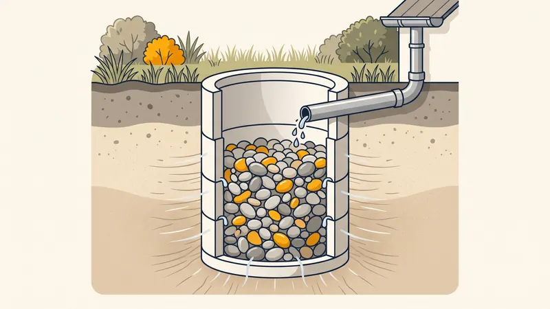

Prix Puits Perdu (Puisard) 2026 : Tarifs & Installation
Vous cherchez une solution pour évacuer les eaux pluviales de votre toiture sans pouvoir vous raccorder au réseau public ? Le puits perdu (aussi appelé puisard ou puits d'infiltration) est l'ouvrage idéal pour infiltrer l'eau de pluie directement dans le sol. Dans ce guide complet, nous détaillons les prix d'un puits perdu en 2026, son dimensionnement, sa technique d'installation et la réglementation applicable à Aix-en-Provence et en PACA.

Qu'est-ce qu'un puits perdu et à quoi sert-il ?
Un puits perdu est un ouvrage vertical enterré, rempli de matériaux drainants ou constitué de buses béton, qui permet d'infiltrer les eaux pluviales dans une couche perméable du sous-sol. Il collecte l'eau de la toiture, des terrasses ou des surfaces imperméabilisées et la restitue lentement au terrain naturel, là où le raccordement à un réseau d'eaux pluviales public n'est pas possible.
Puits perdu, puisard : quelle différence ?
Les deux termes sont souvent confondus. Le puits perdu désigne un ouvrage profond destiné à l'infiltration dans une couche perméable du sol. Le puisard désigne plus largement un regard maçonné de collecte ou de décantation. Dans la pratique courante, on parle indifféremment de puits perdu ou de puisard pour un dispositif d'infiltration des eaux de pluie.
Attention : un usage strictement réservé aux eaux pluviales
Point essentiel et trop souvent ignoré : un puits perdu est exclusivement réservé aux eaux pluviales. Le rejet d'eaux usées domestiques (WC, cuisine, salle de bain) dans un puits perdu est formellement interdit par la réglementation. Pour traiter les eaux usées, il faut un dispositif d'assainissement adapté comme une fosse septique toutes eaux ou une micro-station d'épuration.

Prix d'un puits perdu en 2026 selon le type et la taille
Le coût d'un puits perdu dépend principalement de son volume, de la technique de construction et de la nature du sol à terrasser. Voici les fourchettes constatées en 2026 en région PACA :
| Type de puits perdu / dispositif | Dimensions indicatives | Prix posé (TTC) |
|---|---|---|
| Puits perdu busé béton standard | Ø1 m, profondeur 2 à 3 m | 1 500 - 3 000 € |
| Puits perdu gros volume | Ø1,5 m ou profondeur > 3 m | 3 000 - 5 000 € |
| Massif drainant (structure alvéolaire) | Modulable, 3 à 10 m³ | 2 500 - 6 000 € |
| Tranchée d'infiltration drainante | Longueur 10 à 20 ml | 40 - 90 €/ml |
| Regard de décantation (en amont) | Ø400 à Ø600 mm | 200 - 500 € |
Ces tarifs incluent généralement le terrassement, la fourniture et la pose. Le prix final varie selon l'accessibilité du chantier, la présence de rocher (fréquente en Provence) et la profondeur à atteindre pour rejoindre une couche perméable.
Le détail des postes de coût d'un puits perdu
Pour comprendre le devis d'un ouvrage d'infiltration, voici la décomposition des principaux postes :
| Poste de travaux | Description | Prix indicatif |
|---|---|---|
| Terrassement / fouille | Excavation à la pelle, plus chère en sol rocheux | 400 - 1 200 € |
| Busage béton ou structure alvéolaire | Buses Ø1 m perforées ou modules SAUL | 500 - 2 000 € |
| Géotextile anti-contaminant | Filtre qui évite le colmatage par les fines | 100 - 300 € |
| Graviers drainants (galets, 20/40) | Matériau de remplissage drainant | 200 - 600 € |
| Regard de décantation | Pré-filtre amont avec panier dégrilleur | 200 - 500 € |
| Évacuation des déblais | Transport en décharge agréée | 150 - 500 € |
Obtenez Votre Devis Puits Perdu Gratuit
Chez STP Terrassement, nous réalisons les puits perdus, puisards et dispositifs d'infiltration à Aix-en-Provence et dans toute la région PACA. Devis détaillé et transparent sous 24h.
Demandez votre devis gratuitLe dimensionnement technique d'un puits perdu
Un puits perdu mal dimensionné déborde lors des fortes pluies ou se colmate prématurément. Le dimensionnement repose sur trois paramètres clés.
1. La surface de toiture raccordée
Plus la surface collectée (toiture, terrasse, allée) est grande, plus le volume d'eau à infiltrer est important. On retient en général un volume de stockage de 1 à 1,5 m³ pour 100 m² de toiture, à ajuster selon l'intensité des précipitations locales.
2. La perméabilité du sol (test Porchet)
La capacité d'infiltration se mesure par un test de perméabilité Porchet. On creuse un trou, on le remplit d'eau et on chronomètre la vitesse d'absorption. Un sol qui infiltre vite (sable, calcaire fissuré) permet un ouvrage compact ; un sol argileux imperméable rend le puits perdu inefficace, voire inutilisable.
3. La profondeur et l'implantation
Le puits doit atteindre une couche perméable, souvent entre 2 et 4 mètres de profondeur. Quelques règles d'implantation essentielles :
- Distance minimale de 5 m des fondations de l'habitation pour éviter tassements et humidité
- Au moins 3 m des limites de propriété et des arbres
- Éloignement de tout captage d'eau potable (puits, forage)
- Un regard de décantation placé en amont pour piéger feuilles, sables et boues
- Un entretien régulier du regard, une à deux fois par an
Réglementation : gestion des eaux pluviales à la parcelle
Depuis plusieurs années, la gestion des eaux pluviales à la parcelle est encouragée, voire imposée, pour soulager les réseaux publics et limiter les inondations. Avant tout projet :
- Consultez le PLU (Plan Local d'Urbanisme) de votre commune : il fixe souvent l'obligation d'infiltrer ou de tamponner les eaux pluviales sur le terrain
- Vérifiez si une déclaration en mairie ou l'avis du service assainissement est requis selon le volume infiltré
- Interdiction absolue de rejeter des eaux usées dans un puits perdu
- Respectez les distances réglementaires aux limites et aux ouvrages voisins
Pour une approche globale, consultez aussi notre guide sur la gestion des eaux pluviales d'une maison et celui sur le drainage de terrain.
Le puits perdu en région PACA : spécificités
La région Provence-Alpes-Côte d'Azur et le secteur d'Aix-en-Provence présentent des particularités qui influencent fortement la faisabilité et le prix d'un puits perdu :
- Sols calcaires à perméabilité variable : certains karsts fissurés infiltrent très bien, d'autres zones argileuses sont quasi imperméables. Le test Porchet est donc indispensable
- Pluies méditerranéennes intenses : les épisodes cévenols et orages d'automne génèrent des débits ponctuels considérables qui imposent un dimensionnement généreux
- Présence de rocher : le terrassement peut nécessiter un brise-roche, augmentant le coût de la fouille
- Réglementation locale stricte sur la gestion des eaux pluviales dans les zones urbanisées d'Aix et de la métropole
Exemple de chantier réel à Aix-en-Provence
Puits perdu pour une villa à Puyricard
Projet : Création d'un puits perdu pour infiltrer les eaux pluviales de la toiture (180 m²) d'une villa neuve, sans réseau d'eaux pluviales accessible en limite de parcelle.
Localisation : Puyricard, au nord d'Aix-en-Provence.
Contrainte : Présence de calcaire compact à partir de 1,2 m et incertitude sur la perméabilité réelle du sous-sol.
Solution STP : Nous avons d'abord réalisé un test Porchet qui a confirmé une perméabilité moyenne dans une couche fissurée à 3 m. Nous avons creusé une fouille à la pelle équipée d'un godet de curage, posé un puits busé Ø1 m sur 3 m de profondeur avec buses perforées, enveloppé l'ensemble de géotextile et comblé l'espace annulaire avec des galets drainants 20/40. Un regard de décantation avec panier dégrilleur a été installé en amont.
Résultat : Ouvrage livré pour 2 750 € TTC, conforme au PLU, avec une notice d'entretien remise au client. Aucun débordement constaté après les premiers orages d'automne.
Les erreurs courantes à éviter
- Raccorder des eaux usées au puits perdu. C'est illégal, dangereux pour les nappes et passible de sanctions. Le puits perdu ne reçoit que des eaux pluviales.
- Faire l'impasse sur le test de perméabilité. Sans test Porchet, vous risquez d'installer un ouvrage dans un sol argileux qui n'infiltre pas, rendant le puits totalement inopérant.
- Oublier le regard de décantation. Sans pré-filtre amont, les feuilles, sables et boues colmatent rapidement le massif drainant et le puits cesse de fonctionner.
- Installer le puits trop près de la maison. En deçà de 5 m des fondations, l'infiltration peut provoquer des remontées d'humidité et des tassements différentiels.
- Sous-dimensionner l'ouvrage. Un volume trop faible déborde lors des fortes pluies provençales et finit par ne plus jouer son rôle.
- Négliger l'entretien annuel. Un puits perdu non entretenu se colmate en quelques années ; un nettoyage régulier du regard lui assure 15 à 25 ans de service.
Questions fréquentes
Quel est le prix d'un puits perdu en 2026 ?
Le prix d'un puits perdu se situe entre 1 500 et 3 000 euros TTC pour un puisard busé standard de Ø1 m, pose et terrassement compris. Pour un ouvrage de gros volume ou un massif drainant, comptez 3 000 à 5 000 euros selon le dimensionnement et la nature du sol.
Quelle est la différence entre un puits perdu et un puisard ?
Le puits perdu est un ouvrage profond destiné à infiltrer les eaux pluviales dans une couche perméable du sol. Le puisard désigne plus largement un regard de collecte ou de décantation. Dans le langage courant, les deux termes sont employés indifféremment pour un dispositif d'infiltration des eaux de pluie.
Peut-on raccorder les eaux usées à un puits perdu ?
Non, c'est formellement interdit. Un puits perdu est exclusivement réservé aux eaux pluviales (toiture, terrasse). Le rejet d'eaux usées domestiques dans le sol sans traitement constitue une infraction passible de sanctions et présente un risque sanitaire majeur de pollution des nappes.
Comment dimensionner un puits perdu ?
Le dimensionnement dépend de la surface de toiture raccordée, de l'intensité des pluies locales et de la perméabilité du sol mesurée par un test Porchet. En règle générale, on prévoit un volume de stockage de 1 à 1,5 m³ pour 100 m² de toiture, à adapter selon la capacité d'infiltration du terrain.
À quelle distance des fondations installer un puits perdu ?
Il faut respecter une distance minimale de 5 mètres entre le puits perdu et les fondations d'une habitation, et au moins 3 mètres des limites de propriété. Cette distance évite les infiltrations sous la maison qui pourraient provoquer des tassements ou des remontées d'humidité.
Faut-il une autorisation pour installer un puits perdu ?
La gestion des eaux pluviales à la parcelle est souvent imposée par le PLU. Il faut consulter le règlement d'urbanisme de votre commune avant tout projet. Dans certaines zones, une déclaration en mairie ou l'avis du service assainissement peut être exigé selon le volume infiltré.
Un puits perdu nécessite-t-il un entretien ?
Oui. Le regard de décantation placé en amont doit être nettoyé une à deux fois par an pour retenir les feuilles, sables et boues qui colmateraient l'ouvrage. Un puits perdu bien entretenu et correctement dimensionné fonctionne efficacement pendant 15 à 25 ans.
Le puits perdu est-il adapté aux sols calcaires de Provence ?
Les sols calcaires d'Aix-en-Provence présentent une perméabilité très variable : certains karsts infiltrent bien, d'autres zones argileuses sont quasi imperméables. Un test de perméabilité Porchet préalable est indispensable pour valider la faisabilité et dimensionner correctement l'ouvrage.
Pour aller plus loin
Pourquoi faire appel à un pro comme STP Terrassement
Confier la réalisation de votre puits perdu à STP Terrassement, c'est s'appuyer sur une entreprise locale implantée à Simiane-Collongue (13109) et intervenant chaque jour à Aix-en-Provence et dans toute la région PACA. Nous maîtrisons le test de perméabilité Porchet, le dimensionnement réglementaire, le terrassement en sol calcaire et la pose conforme des ouvrages d'infiltration. Forts de 15 ans d'expérience et d'une garantie décennale en cours de validité, nous établissons un devis détaillé gratuit et sans engagement sous 24h, nous respectons les plannings et nous remettons à la réception une notice d'entretien complète. Choisir STP, c'est la garantie d'un puits perdu durable, conforme au PLU et parfaitement dimensionné. Demandez votre devis gratuit en ligne ou appelez-nous au 07 45 14 20 49 pour échanger directement avec un chargé d'affaires.